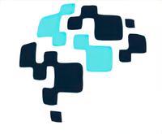
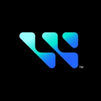

Education
University of California, San Diego
B.S. in Computer Science
Est. Grad: June 2026
GPA: 3.98
Key Coursework:
- Deep Reinforcement Learning
- Machine Learning Algorithms
- Advanced Data Structures
- Computer Vision & NLP
Skills
Languages
Python
SQL
C++
Java
HTML/CSS
JavaScript
Technologies & Frameworks
Git
Linux
Pandas
NumPy
TensorFlow
Scikit-learn
Flask
React
PostgreSQL
Databricks
Professional Experience
Software Engineer Intern
Rivian & Volkswagen Group Technologies - Palo Alto, CA
June 2025 - Present
- Built an AI assistant with agentic RAG delivering contextual Slack support by retrieving and reasoning over internal code, documentation, and discussions using LangChain and vector embeddings
- Developed production FastAPI microservice with async Socket Mode integration for real-time Slack events, implementing custom rate limiting and concurrent message processing using AsyncIO patterns
- Engineered scheduled Databricks Asset Bundle (DAB) pipelines for multi-source data extraction/cleansing with MLflow integration for scalable experimentation and model tracking
- Deployed full dev-to-prod CI/CD pipeline with automated testing (pytest/mypy), multi-stage deployments, and Infrastructure-as-Code using enterprise Databricks workflows and Poetry dependency management
- Key Achievement: Achieved 60% automation of developer support tasks, enabling senior developers to focus on high-value productivity work while delivering $78,000 in operational cost savings through reduced manual intervention

Machine Learning Researcher
Algoverse AI - Remote
Jan 2025 - July 2025
- Developed FaceSafe, a novel privacy-preserving transformation pipeline using diffusion-based inpainting models to systematically replace detected faces with synthetic variants
- Key Achievement: Co-first author on paper accepted to ICML DIG-BUGS 2025, addressing legal compliance requirements (BIPA, Texas Biometric Identifier Act) while advancing privacy-preserving AI and ethical dataset creation for the international machine learning community

Data Engineer Intern
Western Digital - San Jose, CA
May 2024 - Jan 2025
- Leveraged SQL & Python for data manipulation and real-time fault detection.
- Key Achievement: Classified process anomalies, resulting in a 99% reduction in failed batch yield.
Projects
Multi-Agent Intersection Simulation
Developed a multi-agent simulation using highway-env to model autonomous driving behaviors. Explored Deep RL algorithms (PPO, SAC, DQN) and engineered a custom reward function to evaluate policy performance in safety-critical environments.
View on GitHubNeural Network from Scratch
Built a neural network from scratch using only NumPy and math libraries. Achieved 84% accuracy on the MNIST handwritten digits dataset, a significant improvement over the 10% baseline.
View on GitHub